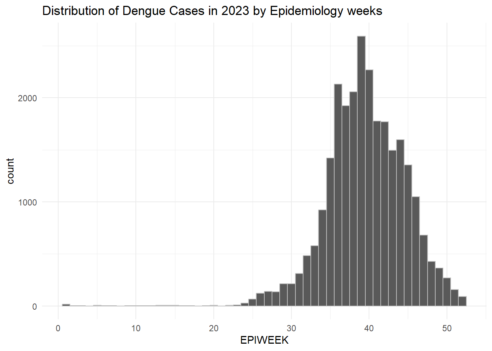

pacman::p_load(tidyverse, tmap, sf, sp, sfdep)Take-home Exercise 2: Application of Spatial and Spatio-temporal Analysis Methods to Discover the Distribution of Dengue Fever in Tainan City, Taiwan
1.0 Introduction
1.1. Overview - Setting the Scene
Dengue Hemorrhagic Fever (in short dengue fever) is one of the most widespread mosquito-borne diseases in the most tropical and subtropical regions. It is an acute disease caused by dengue virus infection which is transmitted by female Aedes aegypti and Aedes albopictus mosquitoes. In 2015, Taiwan had recorded the most severe dengue fever outbreak with more than 43,000 dengue cases and 228 deaths. Since then, the annual reported dengue fever cases were maintained at the level of not more than 200 cases. However, in 2023, Taiwan recorded 26703 dengue fever cases.
1.2 Objectives
In this study, we are interested to discover:
If the distribution of dengue fever outbreak at Tainan City, Taiwan are independent from space and space and time.
If the outbreak is indeed spatial and spatio-temporal dependent, then, you would like to detect where are the clusters and outliers, and the emerging hot spot/cold spot areas.
1.3 Getting Started
In this take-home exercise, we will be using the following packages.
2.0 Data Acquisition
We will be using 2 data sets in this exercise:
| Data | Format | Description | Source |
|---|---|---|---|
| TAIWAN_VILLAGE_2020 | ESRI Shapefile | A geospatial data of village boundary of Taiwan | data.gov.tw |
| Dengue_Daily.csv | csv | An aspatial data of reported dengue cases in Taiwan since 1998 | Taiwan CDC Open Data Portal |
Create a new folder labelled Take-home_Ex02 and place all the files into this folder.
3.0 Importing Geospatial and Aspatial Data
3.1 Importing Geospatial data - TAIWAN_VILLAGE_2020
The TAIWAN_VILLAGE_2020 dataset was acquired in ESRI shapefile format (.shp). To utilise this dataset in the R-environment, we need to import it as an sf object using the st_read() function from the sf package. This function is used to read the shapefile containing the administrative boundaries of Tainan City and returns an sf object named tainan_sf.
tainan_sf <- st_read(dsn = "data/geospatial",
layer = "TAINAN_VILLAGE")Reading layer `TAINAN_VILLAGE' from data source
`C:\kt526\IS415-GAA\Take-home_Ex\Take-home_Ex02\data\geospatial'
using driver `ESRI Shapefile'
Simple feature collection with 649 features and 10 fields
Geometry type: POLYGON
Dimension: XY
Bounding box: xmin: 120.0269 ymin: 22.88751 xmax: 120.6563 ymax: 23.41374
Geodetic CRS: TWD973.2 Importing Aspatial data - Dengue_Daily
The Dengue_Daily dataset is available in csv format (.csv) and was obtained from the Taiwan CDC Open Data Portal. Like the previous dataset, it needs to be imported into the R environment for use. However, since this dataset is aspatial and in csv format, a different method is required for reading it. We will utilize the read_csv() function to import the csv cdataset and store the object in a tibble data frame named dengue.
dengue <- read_csv("data/aspatial/Dengue_Daily.csv")
head(dengue)# A tibble: 6 × 26
發病日 個案研判日 通報日 性別 年齡層 居住縣市 居住鄉鎮 居住村里
<date> <chr> <date> <chr> <chr> <chr> <chr> <chr>
1 1998-01-02 None 1998-01-07 男 40-44 屏東縣 屏東市 None
2 1998-01-03 None 1998-01-14 男 30-34 屏東縣 東港鎮 None
3 1998-01-13 None 1998-02-18 男 55-59 宜蘭縣 宜蘭市 None
4 1998-01-15 None 1998-01-23 男 35-39 高雄市 苓雅區 None
5 1998-01-20 None 1998-02-04 男 55-59 宜蘭縣 五結鄉 None
6 1998-01-22 None 1998-02-19 男 20-24 桃園市 蘆竹區 None
# ℹ 18 more variables: 最小統計區 <chr>, 最小統計區中心點X <chr>,
# 最小統計區中心點Y <chr>, 一級統計區 <chr>, 二級統計區 <chr>,
# 感染縣市 <chr>, 感染鄉鎮 <chr>, 感染村里 <chr>, 是否境外移入 <chr>,
# 感染國家 <chr>, 確定病例數 <dbl>, 居住村里代碼 <chr>, 感染村里代碼 <chr>,
# 血清型 <chr>, 內政部居住縣市代碼 <chr>, 內政部居住鄉鎮代碼 <chr>,
# 內政部感染縣市代碼 <chr>, 內政部感染鄉鎮代碼 <chr>4.0 Data Wrangling
4.1 Preparing a study area layer with specific counties of Tainan City, Taiwan
Task: Confining study area layer to D01, D02, D04, D06, D07, D08, D32 and D39 counties
In this Take-home Exercise, we are interested in narrowing our focus to specific counties within Tainan City, specifically D01, D02, D04, D06, D07, D08, D32, and D39. To prepare a study area layer focusing on these specific counties, we can do the following:
counties <- c('D01', 'D02', 'D04', 'D06', 'D07', 'D08', 'D32', 'D39')
tainan_counties_sf<- tainan_sf %>%
select(TOWNID,
TOWNNAME,
VILLNAME,
geometry) %>%
filter(TOWNID %in% counties)
Notes
The c() function is used to combine the specified counties into a vector (a one dimensional array) named counties. Next, we will filter the Tainan City spatial data frame (tainan_sf) based on the TOWNID column, selecting only those entries that match the counties of interest listed in the counties vector. This refined dataset, named tainan_counties_sf, will serve as our study area layer for further analysis or visualization tasks.
Note: Check that tainan_counties_sf only contains polygon features.
4.2 Preparing a dengue fever layer with specific counties of Tainan City, Taiwan
Tasks:
- Extracting dengue fever cases within epidemiology week 31-50, 2023
- Confining dengue fever layer to D01, D02, D04, D06, D07, D08, D32 and D39 counties
4.2.1 Extracting dengue fever cases within epidemiology week 31-50, 2023
dengue_2023 <- dengue %>%
select(發病日,
最小統計區中心點X,
最小統計區中心點Y,
居住村里) %>%
mutate(EPIWEEK = epiweek(發病日)) %>%
filter(year(發病日) == 2023 & 居住村里 != "None") %>%
rename("ONSET-DATE" = 發病日,
"X-COORDINATE" = 最小統計區中心點X,
"Y-COORDINATE" = 最小統計區中心點Y,
"VILLNAME" = 居住村里)Visualizing the distribution of dengue fever cases across the epidemiology weeks
ggplot(dengue_2023, aes(x = EPIWEEK)) +
geom_histogram(binwidth = 1, color = "grey") +
labs(x = "EPIWEEK", y = "count") +
ggtitle("Distribution of Dengue Cases in 2023 by Epidemiology weeks") +
theme_minimal()
More than 80% of the reported dengue fever cases occurred in epidemiology week 31-50, 2023.
dengue_2023_epiweeks_31_50_df <- dengue_2023 %>%
filter(between(EPIWEEK, 31, 50))
unique(dengue_2023_epiweeks_31_50_df$EPIWEEK) [1] 31 32 33 34 35 36 37 38 39 40 41 42 43 44 45 46 47 48 49 504.2.2 Confining dengue fever layer to D01, D02, D04, D06, D07, D08, D32 and D39 counties
dengue_fever_layer_df <- dengue %>%
select(發病日,
最小統計區中心點X,
最小統計區中心點Y,
居住縣市,
居住鄉鎮,
居住村里) %>%
mutate(EPIWEEK = epiweek(發病日),
TOWNNAME_VILLNAME = paste(居住鄉鎮, 居住村里, sep="_")) %>%
filter(year(發病日) == 2023 &
between(EPIWEEK, 31, 50) &
居住縣市 == "台南市" & 居住鄉鎮 %in% c("安南區", "仁德區", "中西區",
"南區", "永康區", "東區", "北區", "安平區")) %>%
rename("ONSET-DATE" = 發病日,
"X-COORDINATE" = 最小統計區中心點X,
"Y-COORDINATE" = 最小統計區中心點Y,
"VILLNAME" = 居住村里)4.3 Preparing a dengue fever layer in spacetime d3 class of sfdep
dengue_grp <- dengue_fever_layer_df %>%
filter(VILLNAME != "None") %>%
group_by(TOWNNAME_VILLNAME, EPIWEEK) %>%
summarise(num_dengue_cases = n()) %>%
complete(EPIWEEK = 31:50, fill = list(num_dengue_cases = 0))tainan <- tainan_counties_sf %>%
mutate(TOWNNAME_VILLNAME = paste(TOWNNAME, VILLNAME, sep="_")) %>%
select(TOWNNAME_VILLNAME, geometry) %>%
filter(TOWNNAME_VILLNAME %in% unique(dengue_grp$TOWNNAME_VILLNAME))tainan_dengue_st <- spacetime(.data = dengue_grp,
.geometry = tainan,
.loc_col = "TOWNNAME_VILLNAME",
.time_col = "EPIWEEK")is_spacetime_cube(tainan_dengue_st)[1] TRUE
Note
The TRUE return confirms that tainan_dengue_st is indeed an time-space cube.